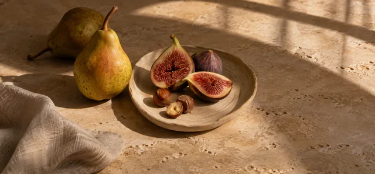

Estética facial
Atendimento com Maria Eduarda Batista, biomédica esteta.
- Toxina botulínica e preenchimento facial
- Bioestimuladores de colágeno e skinbooster
- Microagulhamento e peelings químicos
Clairé Clinic · Itapema, SC
Estética facial e nutrição clínica no mesmo espaço, no Centro de Itapema.
Especialidades
Conheça os procedimentos de estética e as áreas de acompanhamento nutricional da Clairé.
Atendimento com Maria Eduarda Batista, biomédica esteta.
Acompanhamento com Heloisa Maresana, nutricionista.
Do Instagram da Clairé
Do perfil do rosto à rotina alimentar, explore assuntos que a equipe leva para além do consultório.
Estética facial
Um olhar para os ângulos do rosto e para os detalhes que dão equilíbrio ao perfil.

ReelNutrição clínica
Um vídeo sobre histamina nos alimentos e as perguntas que podem surgir na investigação de sintomas.
Nutrição clínica
Ideias para pensar a alimentação na estação mais quente com espaço para flexibilidade.
Nutrição clínica
Uma conversa sobre dietas restritivas e escolhas que cabem na rotina.
Antes de agendar
Comece pela avaliação estética com Maria Eduarda Batista. Leve suas dúvidas sobre a pele, as proporções do rosto ou os procedimentos que tem interesse em conhecer.
Ver estética facialA Clairé oferece acompanhamento para quem quer conversar sobre a rotina alimentar, saúde intestinal, gestação e outras demandas de saúde. A consulta é com Heloisa Maresana.
Ver nutrição clínicaAs duas especialidades atendem no mesmo endereço, na Rua 129 B, 40, sala 04, no Centro de Itapema.
Ver endereço e contatoEquipe
A Clairé nasceu da parceria entre Maria Eduarda e Heloisa. Em agosto de 2026, elas inauguraram em Itapema um espaço compartilhado para estética facial e nutrição clínica.
Ver fotos e cobertura da inauguraçãoCentro de Itapema
Fale com a equipe da Clairé para saber mais sobre o atendimento e combinar um horário.
Agendar pelo WhatsApp